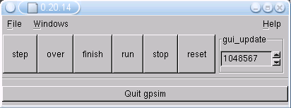
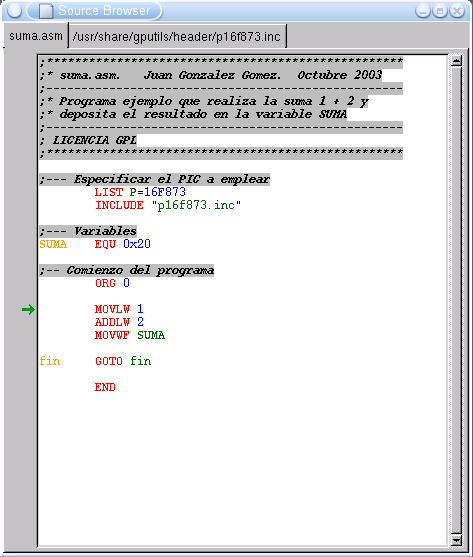
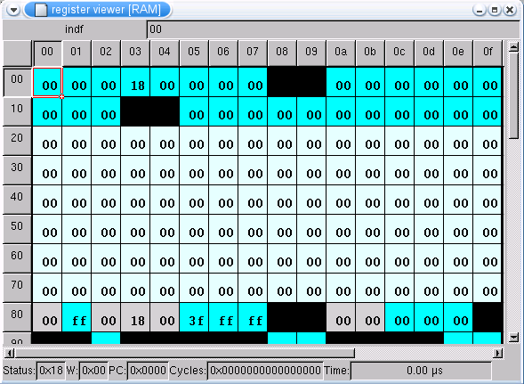
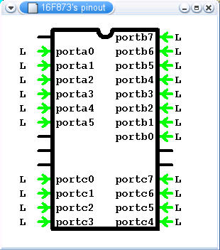

[16:03]
<Obijuan> ok, vamos a empezar con las URL's interesantes
[16:03]
<Obijuan> http://www.gnupic.org/
[16:03]
<Obijuan> Portal con herramientas libres para PICs
[16:03]
<Obijuan> Un poco obsoleto, pero es interesante
[16:04]
<Obijuan> http://gputils.sourceforge.net/
[16:04]
<Obijuan> Estas son las herramientas que vamos a usar
[16:04]
<Obijuan> Herramientas para trabajar con PICS: Ensamblador,
desensamblador, enlazador, etc...
[16:04]
<Obijuan> Compatibles con el ensamblador oficial de MicroChip: MPASM
[16:04]
<sliver> Obijuan: no puedes hacer streaming de auido ?
[16:04]
<Obijuan> sliver: no, pero alguien podría dar una charla sobre eso :-)))
[16:05]
<Obijuan> http://www.dattalo.com/gnupic/gpsim.html
[16:05]
<Obijuan> Herramienta para la simulación de los PICS
|
Herramientas e instalación
|
[16:05]
<Obijuan> El
GPSIM es el que usaremos
[16:05]
<Obijuan> Versiones que vamos a emplear en esta charla:
[16:05]
<Obijuan> gpsim: 0.20.14
[16:05]
<Obijuan> gpasm: 0.11.6
[16:05]
<Obijuan> Yo las tengo instaladas en mi Debian/Sarge. Para instalarlas en Debian
[16:05]
<Obijuan> Sólo hay que poner:
[16:06]
<Obijuan> # apt-get install gpasm gpsim
[16:06]
<Obijuan> Para otras distribuciones hay que ir directamente a las URLs que os
[16:06]
<Obijuan> he comentado antes
|
Lo que veremos en la charla
|
[16:06]
<Obijuan> Ideas previas:
[16:06]
<Obijuan> -No es un tutorial sobre como programar los PICs
[16:06]
<Obijuan> -Veremos cómo manejar las herramientas disponibles para Linux,
[16:06]
<Obijuan> que nos permiten manejar los PICs
[16:07]
<Obijuan> -Supondré que tenéis instaladas las herramientas. Las iremos probando, yo
[16:07]
<Obijuan> en mi máquina y vosotros en las vuestras. Para los que no las tengáis
[16:07]
<Obijuan> instaladas será un poco rollo :-(, por eso he preparado unos "pantallazos"
[16:07]
<Obijuan> para que los podáis ver :-)
[16:07]
<Obijuan> -Dejad el navegador listo
[16:07]
<Obijuan> Vamos a empezar con un primer programa
[16:08]
<Obijuan> Manos a la obra. Vamos a trabajar con un programa MUY sencillo. (lo hice
[16:08]
<Obijuan> en clase). Haremos la siguiente operación: SUMA = 1 + 2
[16:08]
<Obijuan> En clase vimos para qué era cada instrucción y directiva. Aqué veremos
[16:08]
<Obijuan> el proceso de
ensamblar y
simular.
[16:08]
<Obijuan> El programa lo podéis bajar de:
[16:08]
<Obijuan>
http://www.iearobotics.com/proyectos/charlas-irc/pic-linux/ejemplos/suma.asm
[16:09]
<Obijuan> (Esta URL es temporal, sólo para esta charla. Más adelante la colocará en
[16:09]
<Obijuan> otro lugar)
[16:09]
<Obijuan> Abrimos un terminal
[16:09]
<Obijuan> Nos creamos un directorio de trabajo, donde probaremos todos los ejemplos:
[16:09]
<Obijuan> $ mkdir pic
[16:09]
<Obijuan> $ cd pic
[16:09]
<Obijuan> Ahí ponemos el programa
suma.asm. Los ficheros "fuente" tienen
[16:10]
<Obijuan> la extensión
.asm. Son archivos de texto ASCII, que podremos editar
[16:10]
<Obijuan> con cualquier editor. Vamos a echar un vistazo al código, antes de
[16:10]
<Obijuan> ensamblarlo.
[16:10]
<Obijuan> Según los gustos:
[16:10]
<Obijuan> 1)
cat suma.asm
[16:10]
<Obijuan> 2)
emacs suma.asm
[16:10]
<Obijuan> 3)
vim suma.asm
[16:10]
<Obijuan> 4)
gedit suma.asm
[16:10]
<Obijuan> 5)
kate suma.asm
[16:10]
<Obijuan> 6) ...
[16:10]
<Obijuan> En el Laboratorio de arquitectura trabajamos con la familia
[16:10]
<Obijuan> de PICS
16F87X. Los ejemplos de clase los he hecho para el
[16:10]
<Obijuan> 16F876.
[16:11]
<Obijuan> Sin embargo véis que en la primera línea pone:
[16:11]
<Obijuan> LIST P=16F873
[16:11]
<Obijuan> El simulador (GPSIM) todavía no soporta el 16F876, así que usaremos
[16:11]
<Obijuan> el 16F873 que es prácticamente igual (tiene el mismo número de pines,
[16:11]
<Obijuan> los mismos registros, etc...)
[16:11]
<Obijuan> (Realmente no sé cual es la diferencia con el 16F876 ;-)
[16:11]
<Obijuan> Así que para nosotros 16F873 = 16F876
[16:11]
<Obijuan> Fijaros también en la directiva:
[16:11]
<Obijuan> INCLUDE "p16f873.inc"
[16:12]
<Obijuan> que incluye el archivo
p16f873.inc, el cual contiene todas las definiciones
[16:12]
<Obijuan> de los recursos del pic16f876. Vamos a ver físicamente donde está
[16:12]
<Obijuan> este archivo, por si lo queremos ver:
[16:12]
<Obijuan> $ locate p16f873.inc
[16:12]
<Obijuan> /usr/share/gputils/header/p16f873.inc
[16:12]
<Obijuan> Es un archivo de texto, que podemos editar... pero eso lo haremos más
[16:12]
<Obijuan> adelante.
[16:12]
<Obijuan> Vamos a
ensamblar nuestro programa. Tecleamos:
[16:12]
<Obijuan> $ gpasm suma.asm
[16:12]
<Obijuan> No han aparecido errores (de hecho no sale ningún mensaje).
[16:13]
<Obijuan> ¿Qué ficheros se han generado?
[16:13]
<Obijuan> $ ls -l
[16:13]
<Obijuan> -rw-r--r-- 1 juan juan 565 2003-10-26 11:48 suma.asm
[16:13]
<Obijuan> -rw-r--r-- 1 juan juan 5632 2003-10-26 11:57 suma.cod
[16:13]
<Obijuan> -rw-r--r-- 1 juan juan 56 2003-10-26 11:57 suma.hex
[16:13]
<Obijuan> -rw-r--r-- 1 juan juan 12299 2003-10-26 11:57 suma.lst
[16:13]
<Obijuan> La hora es de esta mañana :-)
[16:13]
<Obijuan> Vemos tres ficheros nuevos:
[16:13]
<Obijuan> 1) suma.hex: este es el ejecutable. Contiene el programa en
código máquina
[16:13]
<Obijuan> y será el que se grabe en el PIC.
[16:13]
<Obijuan> Realmente es un fichero ASCII. Vamos a cotillearlo ;-)
[16:14]
<Obijuan> $ cat suma.hex
[16:14]
<Obijuan> :020000040000FA
[16:14]
<Obijuan> :080000000130023EA0000328BC
[16:14]
<Obijuan> :00000001FF
[16:14]
<Obijuan> Ahí está el código máquina, junto con alguna información adicional. Este
[16:14]
<Obijuan> formato es necesario conocerlo si eres un desarrollador y quieres
[16:14]
<Obijuan> hacerte un grabador, por ejemplo. Se denomina
formato HEX
y es de Intel.
[16:14]
<Obijuan> 2) suma.cod
[16:14]
<Obijuan> Este es el fichero que usaremos para la simulación. No es ASCII.
[16:14]
<Obijuan> 3) suma.lst
[16:14]
<Obijuan> Fichero ASCII con el listado de nuestro programa, e información sobre
[16:14]
<Obijuan> los símbolos empleados, cuantas palabras de memoria ocupa, etc... Nosotros
[16:14]
<Obijuan> no lo usaremos.
[16:15]
<Obijuan> Vamos a ver cómo funciona el programa y comprobar si hace lo que tiene
[16:15]
<Obijuan> que hacer.
Aqué empieza lo interesante.
[16:15]
<Obijuan> Algún problema con el ensamblado?
[16:15]
<Obijuan> Alguien lo ha probado? :-)
[16:15]
<alejandro> está moderado el canal, por el momento no hay ninguna pregunta.
[16:15]
<Obijuan> ok
|
Simulando el programa suma.asm
|
[16:15]
<Obijuan> Vamos a usar el
GPSIM, que es basante alfa, por lo que casca de vez en
[16:15]
<Obijuan> cuando. Si lo hacéis como yo os digo no habrá problemas :-)
[16:16]
<Obijuan> Pero si empezáis a pinchar opciones por vuestra cuenta seguro que
[16:16]
<Obijuan> lo petáis. Aún así, veréis que es bastante potente y es cojonudo para
[16:16]
<Obijuan> aprender a programar el PIC.
[16:16]
<Obijuan> Manos a la obra. Teclead:
[16:16]
<Obijuan> $ gpsim -s suma.cod
[16:16]
<Obijuan> En la consola os aparecerá:
[16:16]
<Obijuan> gpsim - the GNUPIC simulator
[16:16]
<Obijuan> version: 0.20.14
[16:16]
<Obijuan>
[16:16]
<Obijuan>
[16:16]
<Obijuan> type help for help
[16:16]
<Obijuan> gpsim> Loading suma.cod
[16:16]
<Obijuan> processing cod file suma.cod
[16:16]
<Obijuan> f873 create
[16:16]
<Obijuan> symbol at address 3 name fin
[16:16]
<Obijuan> --- Reset
[16:16]
<Obijuan> Enabling WDT timeout = 0.018 seconds
[16:17]
<Obijuan>
[16:17]
<Obijuan> gpsim>
[16:17]
<Obijuan> y además se os abrirá una ventana gráfica como esta:
[16:17]
<Obijuan>
http://www.iearobotics.com/proyectos/charlas-irc/pic-linux/pantallazos/pantallazo1.png

[16:17]
<Obijuan> (Si os aparecen más ventanas, cerradlas. Eso es que habéis estado
[16:17]
<Obijuan> jugueteando antes, eh??)
[16:17] *** alejandro cierra [16:17] [Read error: 104 (Connection reset by peer)]
[16:17]
<Obijuan> Vaya, el moderador se ha esfumado
[16:18]
<Obijuan> De la consola nos olvidamos. Aparecerán mensajes, pero no les prestaremos
[16:18]
<Obijuan> atención. Nos centraremos en el
interfaz gráfico.
[16:18]
<Obijuan> Lo primero que necesitamos es "ver" nuestro código fuente, para conocer
[16:18]
<Obijuan> paso a paso qué ocurre cada vez que se ejecuta una instrucción.
[16:18]
<Obijuan> Pinchamos en "
windows" y marcamos la opción "
Source".
Se nos abrirá
[16:18]
<Obijuan> una nueva ventana que contiene nuestro
código fuente. Algo como esto:
[16:18]
<Obijuan>
http://www.iearobotics.com/proyectos/charlas-irc/pic-linux/pantallazos/pantallazo2.png

[16:19]
<Obijuan> El resaltado de sintáxis es un poco "ortera" :-). Me imagino que en las
[16:19]
<Obijuan> siguientes versiones habrá alguna opción para cambiarlo :-DDD
[16:19]
<Obijuan> Vemos que en esta ventana tenemos
dos "pestañas" en la parte superior
[16:19]
<Obijuan> En la de la izquierda está nuestro programa
suma.asm. En la de la derecha
[16:19]
<Obijuan> el fichero
p16f873.inc.
[16:19]
<Obijuan> Los ficheros
.inc son los originales de Microchip por eso no os extrañáis
[16:19]
<Obijuan> al ver cosas coma esta (líneas 12 y 13):
[16:19]
<Obijuan> ; 1. Command line switch:
[16:19]
<Obijuan> ; C:\ MPASM MYFILE.ASM /PIC16F873
[16:19]
<Obijuan> El ensamblador
gpasm se ha hecho para ser
totalmente compatible con
[16:19]
<Obijuan> el
MPASM de Microchip. Viendo estas líneas ya habéis aprendido a
[16:19]
<Obijuan> ensamblar desde Windows. Para probar este mismo ejemplo sólo habráa que
[16:19]
<Obijuan> poner:
[16:20]
<Obijuan> C:\> MPASM suma.asm
[16:20]
<Obijuan> Volvemos a la pestaña de suma.asm. En la izquierda vemos una
[16:20]
<Obijuan> flecha verde, que apunta a la primera instrucción:
[16:20]
<Obijuan> MOVLW 1
[16:20]
<Obijuan> Pero para simular necesitamos ver la memoria y todos sus registros,
[16:20]
<Obijuan> el acumulador W, etc... Pinchamos en la ventana principal, en la
[16:20]
<Obijuan> opción windows/ram. Se nos abre otra ventana, similar a esta:
[16:20]
<Obijuan>
http://www.iearobotics.com/proyectos/charlas-irc/pic-linux/pantallazos/pantallazo2.png

[16:20]
<Obijuan> En ella vemos una parte de la
RAM. Con la barra de desplazamiento
[16:20]
<Obijuan> de la derecha nos movemos por ella.
[16:21]
<Obijuan> Alguna pregunta?
[16:21]
<alejandro> No, por el momento no.
[16:21]
<alejandro> Aunque como se lanza el simulador una vez que hemos generado el código? :-)
[16:21]
<Obijuan> $ gpsim -s suma.cod
[16:21]
<Obijuan> no lo he puesto?
[16:22]
<alejandro> Si, pero me cai. :)
[16:22]
<Obijuan> Fijaros en la
parte inferior de la ventana. Ahí podemos ver el
[16:22]
<Obijuan> valor del
registro de STATUS, el contenido del
registro W, el
[16:22]
<Obijuan> contador de programa (PC) y
el tiempo. Como todavía no hemos
[16:22]
<Obijuan> empezado a simular, el tiempo está a 0.00 micro-segundos.
[16:22]
<Obijuan> Las celdas de
color azul oscuro son registros internos del
[16:22]
<Obijuan> PIC (Contador de programa, registros de periféricos, etc...)
[16:23]
<Obijuan> Las
celdas en negro son registros que NO están implementados
[16:23]
<Obijuan> en el PIC16F876
[16:23]
Alejandro recuerda que para cualquier pregunta, haganmela a mi por privado.
[16:23]
<Obijuan> Las
celdas "azul celeste claro" son los registros disponibles para que
[16:23]
<Obijuan> los use el programador.
[16:23]
<Obijuan> Las
celdas grises son las que están accesibles desde todos los bancos.
[16:23]
<Obijuan> (registros comunes)
[16:23]
<Obijuan> Para trabajar, colocaros las tres ventanas que tenemos abiertas
[16:23]
<Obijuan> de manera que tengáis acceso a ellas, por ejemplo yo lo tengo así:
[16:23]
<Obijuan> (cuidado, ocupa 300KB)
[16:24]
<Obijuan>
http://www.iearobotics.com/proyectos/charlas-irc/pic-linux/pantallazos/pantallazo4.png
[16:24]
<Obijuan> Comenzamos a simular.
[16:24]
<Obijuan> Vamos a ejecutar la primera instrucción.
[16:24]
<Obijuan> Pulsamos el botón "step" de la ventana principal
[16:24]
<Obijuan> Se ha ejecutado:
[16:24]
<Obijuan> MOVLW 1
[16:24]
<Obijuan> Que lo que hace es poner el valor 1 en el acumulador W.
[16:25]
<Obijuan> Podemos ver en la ventana de la
RAM (parte inferior) que efectivamente
[16:25]
<Obijuan> ahora W vale 0x01
[16:25]
<Obijuan> Observad también que algunas posiciones de la
[16:25]
<Obijuan> memoria RAM se han vuelto de
color "azul"
[16:25]
<Obijuan> Eso indica lo que ha cambiado
[16:25]
<Obijuan> al ejecutar la instrucción.
[16:25]
<Obijuan> Ejecutamos la siguiente instrucción (
pinchamos otra vez en step)
[16:25]
<Obijuan> ADDLW 2
[16:25]
<Obijuan> Esta instrucción suma 2 a lo que había en W. Efectivamente, vemos que
[16:25]
<Obijuan> ahora W vale 3.
[16:25]
<Obijuan> Pinchamos otra vez en
step:
[16:26]
<Obijuan> MOVWF SUMA
[16:26]
<Obijuan> El contenido del acumulador W se deposita en la variable SUMA. Esta
[16:26]
<Obijuan> variable la hemos situado en la dirección 0x20 de la RAM. Si nos fijamos
[16:26]
<Obijuan> en esa posición vemos que se ha puesto en "azul" y que contiene el valor 3
[16:26]
<Obijuan> La última instrucción es un bucle infinito, para finalizar.
[16:26]
<Obijuan> ¡¡Ya hemos simulado nuestro primer programa!!
[16:26]
<Obijuan> Preguntas?
[16:26]
<alejandro> Parece que ninguna, se lo saben todo. :-)
[16:27]
<Obijuan> o nadie lo está probando :-))))
[16:27]
<Obijuan> ¿Cuanto tiempo ha tardado en ejecutarse?
[16:27]
<Obijuan> Miramos el tiempo y vemos que
[16:27]
<Obijuan> pone: 3.00 micro segundos.
[16:27]
<Obijuan> ¡¡Sólo ha tardado 3 micro segundos!! (antes de
[16:27]
<Obijuan> entrar en el bucle infinito, claro, donde permanecería de por vida, hasta
[16:27]
<Obijuan> que hiciésemos un reset)
[16:27]
<alejandro> 33.00 µs
[16:27]
<alejandro> hmm, a mi más :-)
[16:28]
<Obijuan> Porque le habrás dado más veces al step
[16:28]
<Obijuan> :-)
[16:28]
<Obijuan> Apretad el
botón "Quit gpsim". Todas las ventanas desaparecen.
[16:28]
<Obijuan> Tranquilos,
[16:28]
<Obijuan> gpsim almacena el tamaño y la colocación. La próxima vez que lo ejecutemos
[16:28]
<Obijuan> nos aparecerá exactamente igual que como lo teníamos.
|
Un segundo programa de ejemplo: ledon.asm
|
[16:28]
<Obijuan> Bueno, para terminar una segunda simulación.
[16:28]
<Obijuan> Vamos a comunicarnos con
[16:28]
<Obijuan> el "exterior" del PIC. Queremos
encender un led que está conectado al
[16:28]
<Obijuan> bit 1 del
puerto B.
[16:29]
<Obijuan> Primero tendremos que
configurar el puerto B para que
[16:29]
<Obijuan> su
bit 1 sea de salida y luego enviaremos un "1" a esa posición para que
[16:29]
<Obijuan> salgan
5v voltios por el
pin correspondiente y se encienda un led.
[16:29]
<Obijuan> Aqué está el programa:
[16:29]
<Obijuan>
http://www.iearobotics.com/proyectos/charlas-irc/pic-linux/ejemplos/ledon.asm
[16:29]
<Obijuan> Para los alumnos de arquitectura: este ejemplo lo mostrará el próximo
[16:29]
<Obijuan> día en clase y nos servirá más adelante para comprobar que tenemos
[16:29]
<Obijuan> el hardware correctamente construido
[16:29]
<Obijuan> Hacemos el mismo proceso que antes.
Primero ensamblamos:
[16:29]
<Obijuan> $ gpasm ledon.asm
[16:29]
<Obijuan> Ahora sí que nos aparece un mensaje. No es un error, es una especie de
[16:30]
<Obijuan> Warning:
[16:30]
<Obijuan> ledon.asm:21:Message [302] Register in operand not in bank 0. Ensure bank bits are correct.
[16:30]
<Obijuan> En la línea 21:
[16:30]
<Obijuan> BCF TRISB,1 ; Poner RB1 como salida
[16:30]
<Obijuan> estamos accediendo al registro
TRISB, que está en el Banco 1. El
[16:30]
<Obijuan> ensamblador nos avisa de que tengamos cuidado. Nos tenemos que
[16:30]
<Obijuan> asegurar que antes de acceder a TRISB estemos en el banco correcto.
[16:30]
<Obijuan> $ ls -l ledon*
[16:30]
<Obijuan> juan@milenium:~/pic$ ls -l ledon*
[16:30]
<Obijuan> -rw-r--r-- 1 juan juan 1079 2003-10-26 13:01 ledon.asm
[16:30]
<Obijuan> -rw-r--r-- 1 juan juan 5632 2003-10-26 13:02 ledon.cod
[16:30]
<Obijuan> -rw-r--r-- 1 juan juan 60 2003-10-26 13:02 ledon.hex
[16:30]
<Obijuan> -rw-r--r-- 1 juan juan 12974 2003-10-26 13:02 ledon.lst
[16:30]
<Obijuan> juan@milenium:~/pic$
[16:31]
<Obijuan> Se han generado los ficheros
ledon.cod,
ledon.hex y
ledon.lst.
[16:31]
<Obijuan> El fichero
ledon.hex lo podríamos grabar en nuestro pic. De echo, esto
[16:31]
<Obijuan> lo haremos en el Laboartorio de arquitectura.
[16:31]
<Obijuan> Ahora vamos a simular.
[16:31]
<Obijuan> $ gpsim -s ledon.cod
[16:31]
<alejandro>Obijuan: Dicen que si puedes ir algo más despacio.
[16:31]
<Obijuan> TACHAN!!!! Nos aparecen las ventanas en la misma posición que las habíamos
[16:31]
<Obijuan> dejado antes: la ventana principal, la ventana con el código fuente y
[16:31]
<Obijuan> la que tiene la RAM.
[16:31]
<Obijuan> sorry
[16:32]
<alejandro>Q:
<sliver> como sabe el programador que registros tiene para usarlos, los dice el fabricante ?
[16:32]
<Obijuan> Sí, viene en las especificaciones del pic
[16:32]
<Obijuan> El
manual del PIC16F876 se puede bajar de la página de microchip
[16:32]
<Obijuan> Pero también lo tengo en mi web:
[16:33]
<alejandro>A mi no me ha quedado muy claro el concepto de banco.
[16:33]
<Obijuan>
http://www.iearobotics.com/personal/andres/proyectos/picmin/download/manuales/manual16f87x.pdf
[16:33]
<Obijuan> alejandro: eso no lo he explicado :-)
[16:33]
<Obijuan> Me estoy centrando en el uso de las herramientas
[16:33]
<alejandro> Ya, por eso. :)
[16:34]
<Obijuan> Básicamente, en la memoria del PIC hay
4 bancos
[16:34]
<Obijuan> En cada uno de ellos hay unos registros
[16:34]
<Obijuan> Para acceder a esos registros hay que
seleccionar el banco adecuado
[16:34]
<Obijuan> En la
página 15 del manual podéis ver todos los bancos, y todos los registros que hay en ellos
[16:34]
<Obijuan> En la
página 158 están todos los nemónicos
[16:35]
<Obijuan> Pero ahora nos centraremos en la simulación
[16:35]
<Obijuan> Tenéis ensamblado el programa
ledon.asm?
[16:35]
<alejandro> si
[16:35]
<Obijuan> Continuamos con la simulación
[16:36]
<Obijuan> $ gpsim -s ledon.cod
[16:36]
<Obijuan> Y os deberían aparecer todas las ventanas que tenías abierta antes
[16:36]
<Obijuan> Una con las
Fuentes, otra con la
ram y la
principal
[16:36]
<Obijuan> Pero necesitamos más cosas. Ahora queremos ver qué está pasando con los
[16:36]
<Obijuan> pines del pic.
[16:36]
<Obijuan> Pinchamos en
windows/pin (en la ventana principal) y nos
[16:36]
<Obijuan> aparece un dibujo (un poco cutre) del PIC
[16:37]
<Obijuan> Aqué lo podéis ver:
[16:37]
<Obijuan>
http://www.iearobotics.com/proyectos/charlas-irc/pic-linux/pantallazos/pantallazo5.png

[16:37]
<Obijuan> Este tipo de dibujos reciben el nombre de
PinOut.
[16:37]
<Obijuan> Las "cosas" verdes que hay son en realidad "flechas" que nos indican el
[16:37]
<Obijuan> sentido del pin.
[16:38]
<Obijuan> Ahora está indicando que son
PINES DE ENTRADA (Es el
[16:38]
<Obijuan> estado por defecto depués de un reset).
[16:38]
<Obijuan> Las letras
"L" indican que los pines están a nivel
"LOW".
[16:38]
<Obijuan> El color verde
[16:38]
<Obijuan> de las flechas nos indica esto también: que todas las entradas están
[16:38]
<Obijuan> a "LOW", es decir, que se está recibiendo un '0' lógico.
[16:38]
<Obijuan> Comenzamos la simulación.
[16:38]
<Obijuan> Pulsamos
Step
[16:38]
<Obijuan> BSF STATUS,RP0
[16:38]
<Obijuan> Con esta instrucción ponermos a 1 el bit RP0 del registro de STATUS,
[16:38]
<Obijuan> para acceder al banco 0.
[16:39]
<Obijuan> Volvemos a pulsar
STEP:
[16:39]
<Obijuan> BCF TRISB,1
[16:39]
<Obijuan> Con esto configuramos el pin 1 del puerto B para que sea de salida
[16:39]
<Obijuan> en vez de entrada.
[16:39]
<Obijuan> Fijaros en el
Pinout
[16:39]
<Obijuan> Ahora la Flecha verde que está en "portb1" está
[16:39]
<Obijuan> apuntando hacia fuera: Esto indica que
se ha configurado como salida.
[16:39]
<Obijuan> Chulo, eh?
[16:40]
<Obijuan> Lo véis bien?
[16:40]
<alejandro>si, mola. :)
[16:40]
<alejandro> <sliver> el dibujo es horrible
[16:40]
<alejandro> jeje. :-)
[16:40]
<Obijuan> Siguiente instrucción. Hacemos otro
STEP:
[16:40]
<Obijuan> BCF STATUS,RP0
[16:40]
<alejandro> <HyLian> dile q ta mu chulo xD
[16:40]
<Obijuan> Ahora accedemos al banco 0, que es donde se encuentra el registro PORTB
[16:40]
<Obijuan> Hacemos un nuevo
STEP:
[16:41]
<Obijuan> BSF PORTB,1
[16:41]
<Obijuan> Con esto ponemos a '1' el bit 1 del puerto B, es decir, sacamos 5v al
[16:41]
<Obijuan> exterior del PIC.
[16:41]
<Obijuan> Fijaos en el Pinout: Ahora la
flecha es Roja y tiene la
[16:41]
<Obijuan> letra H de "HIGH".
[16:41]
<Obijuan> Hemos sacado 5v al exterior. Y si tenemos conectado un
[16:41]
<Obijuan> led en nuestro PIC real, veríamos que se encendería.
[16:41]
<Obijuan> ¿Cuanto tiempo ha tardado en ejecutarse el programa?
[16:41]
<Obijuan> Miramos el tiempo: 4 micro-segundos.
[16:42]
<Obijuan> ¿Cuanta memoria ocupa el programa?
[16:42]
<Obijuan> Pinchamos en
Windows/program memory para ver la memoria de programa:
[16:42]
<Obijuan> Vemos que ocupa 5 posiciones, desde la 0x0000 hasta la 0x0004. Es decir,
[16:42]
<Obijuan> 5 palabras de memoria.
[16:42]
<Obijuan> El PIC16F876 tiene 8K palabras en total
[16:42]
<Obijuan> Con el
GPSIM podemos hacer cosas mucho más potentes: poner breakpoints,
[16:42]
<Obijuan> simular interrupciones, conectar LCDs...
[16:43]
<Obijuan> pero eso lo veremos en otra
[16:43]
<Obijuan> charla :-)
[16:43]
<Obijuan> No quiero aburriros
[16:43]
<Obijuan> Para terminar:
[16:43]
<Obijuan>
http://www.iearobotics.com/proyectos/charlas-irc/pic-linux/pantallazos/fin.png
[16:43]
<Obijuan> Con estas nociones básicas, se pueden simular todos los programas que hagan en clase del laboratorio de Arquitectura
[16:44]
<Obijuan> Otro día organizaremos otra charla pero de programación del PIC, ahora que ya conocemos las herramientas
[16:44]
<Obijuan> Preguntas? Dudas?
{kind=link}
{kind=link}
{kind=link}
{kind=link}
{kind=link}
{kind=link}